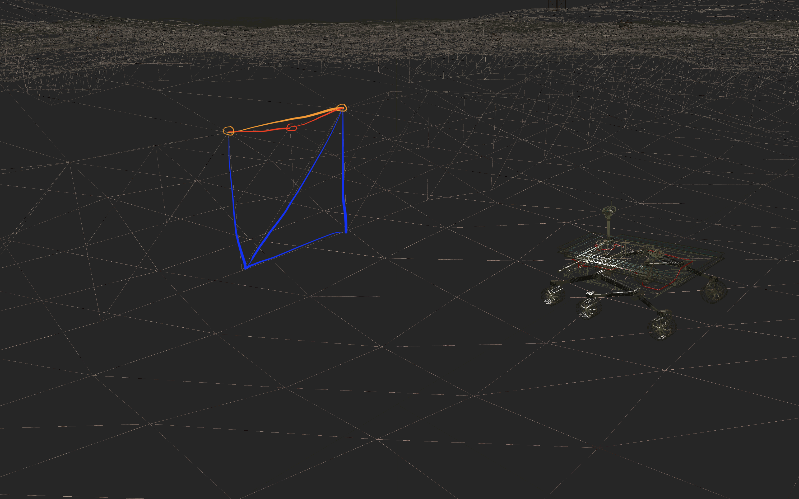

A real-time rendering demo featuring infinite procedural terrain streaming with chunk paging, multi-LOD terrain, and a custom scene graph renderer. Infinite Wasteland has you controlling a rover to explore and interact with a procedurally generated infinite world.
Implemented in C++ using OpenGL and GLSL.
120 FPS on M3 MacBook Pro at 3024×1964 with the following settings

Build by creating a build directory mkdir build, then entering that directory cd build, then and running cmake .. and make. You must have OpenGL, Glad, and GLM already installed and in your path. Once built, run the executable. Tested on mac, should work on linux and windows too.
./InfiniteWasteland [world_seed] [resource_directory]
Mouse and/or trackpad can be used to rotate the camera
This was my CSC 471 final project. I initially planned to do a magnet field simulation, but I wanted to lay some ground work first. That ground work ended up being the entire project, as I kept finding more features I wanted to add or things I wanted to optimize. This project also incorporates code from my labs and projects, which includes some base code provided from the class and has shaped the design in a certain direction.
The scene graph is made up of nodes. Each node has position, scale, and Euler rotation on each axis. For this project, gimbal locking was not likely and smooth rotational interpolation was not necessary, so euler angles were acceptable. These are combined to produce a local transformation. In addition, each node has one parent referenced to by a weak pointer and children referenced to by shared pointers. Using a weak pointer for the parent avoids a reference loop.
When we render a frame, first we traverse the scene graph starting from the scene node. This is done iteratively for performance. When a node is traversed, it updates a global transform by combining its local transform and its parent global transform. If the node is an object then it is added to the draw queue with its specific shader program.
After we traverse the scene graph, we then draw the scene. The separate draw queues are used so we only have to bind and unbind a shader program once for all objects using that program. When an object is drawn, it applies its model matrix, specific material (mostly shader uniforms), and then draws its geometry.
The skybox is drawn before the scene, with depth testing and depth writes disabled. In retrospect, it would be more ideal to draw it after the scene with depth testing only, but this is fine regardless.
The terrain is made up of chunks of a constant number and size. Each chunk is made up of some set number of LODs, each LOD has geometry data stored in CPU memory. These are generated by producing a grid of evenly spaced vertices, with each LOD having half the resolution of the previous LOD. The height of each vertices is presampled at the highest LOD, and likewise normals are calculated at these highest LODs using the surrounding vertices heights. Perlin noise sampling is done from using an external library and with a random or user provided seed.
An issue occurs when two adjacent chunks are at different LODs. The additional vertices on the higher LOD chunk at the seam can be lower than the height of the triangle between the two surrounding vertices. This causes the skybox to be visible through the terrain at these seams. This is reasonably resolved by creating an additional skirt of quads below the seam vertices.
For an infinite world, we need to generate new chunks, unload old chunks, and load previous chunks. To make operations simpler, we have a different discrete coordinate space that is the number of chunks from the world center. This is the absolute chunk location. We store the grid of loaded chunks in an array which can be accessed using the relative chunk location. The center of this square of the chunks is the paging center. The relative chunk location is the absolute location of chunks but instead center around the paging center. The paging center changes when the camera moves to a new chunk. When the paging center changes, the grid is remade, with chunks not in the grid being unloaded, and new chunks either being reloaded or generated. Then LODs are updated, with each chunk with a new LOD changing the contents of their buffers on the GPU. The LOD level is dependent the logarithmic distance from the paging center. In addition, any object outside of a loaded chunk chunk is unloaded and any unloaded objects within a loaded chunk are reloaded. The terrain is textured, with has color variation via perlin noise in the shader, it also has Blinn-Phong lighting, and some distance fog.
All of this makes a sufficiently performant to run this in real-time on a reasonable computer. Of course, there are many other improvements that could be done here, including frustum culling, GPU generation of textures, and do instanced rendering for new chunks., but using it for vertex position would make other parts of the program more difficult (the data would need to be sampled or transferred back onto CPU).
Due to the nature of the game, game objects don’t ever really move up, thus collisions with the terrain can be reframed as forcing objects to the terrain. To start, we certainly want objects to be flat on the terrain and just touch it. First we need a pivot at the base of the objects, then we can sample the topology at that location and set the position of the height pivot. Then we can also calculate the normal at this pointer either with two or four additional samples. We can use this normal to find the rotation of the object.
This works, but for controllable nodes, a more accurate approach is ideal. Specifically, sampling one point and an approximation of its partial derivative is not sufficient, as the object is contacting the ground at multiple points, a minimum three. A plane though is structure that can produce a position and rotation at any arbitrary point and there can be multiple points on the plane. However, if we have a vehicle with for more than three contact points they won’t be on the same plane unless they are co-planar, but we can approximate and get close enough. There are multiple approaches for this, for example least-squares, but I went with an intuitive approach by using the normals of the triangles the points form. For the controllable object, the rover, I went with four points, and constructed two triangles. Then I summed the unnormalized normals of these two triangles, then normalized. This is basically a weighted sum of the triangle normals and gives us the normal of our plane. Now we need a point to offset the plane, and for this I use the centroid of the quad (average of all the points). We can equivalently specify the offset of the plane with the distance along the negative unit normal of the plane from the origin. This is also equivalent to the negative signed distance from the origin to the plane. This gives us a plane equation of dot(n, v) + d = 0, where n is the unit normal of the plane, v is a point on the plane, and d is the negative signed distance from origin. It is easy to derive that the height, v_z, of a point v_x, v_y on the plane can be found with v_z = -(n_x * v_x + n_y * v_y + d) / n_z. Given that we have a normal and can find the height, we can use that for the position and rotation of the object.
A few extra notes, currently the underlying terrain topology is used. This is actually not ideal, since even though it is technically more accurate, that accuracy is detrimental since it conflicts with the less accurate terrain geometry. Ideally we would use the terrain geometry for this, and perhaps the highest LOD to be consistent. Additionally, the rover currently only uses four points, but with the model I choose there are 6 points that should be considered. Although this is mitigated by manipulating the wheel child objects to have their height independently move with the terrain.
Axis-Aligned Bounding-Box (AABB) collisions uses bounding boxes which are uniquely defined by their center and their size in the world x, y, and z axes. This makes collisions rather straightforward if you have such a bounding box. For a collision between two bounding boxes, you can calculate the penetration (i.e. how much they overlap in a specific axis) in each axis with pen = 0.5 * (A_topright - A_bottomleft) + 0.5 * (B_topright - B_bottomleft) - abs(A_center - B_center). Basically you seeing if the sum of center to the edge of both bounding boxes is more than the distance between the centers of the bounding boxes (in each axis independently). If all component of the penetration vector are positive, then the bounding boxes are overlapping.
If we find they are colliding, we can find the minimum vector to push one bounding box out of the other by finding the axis with the least penetration. We also need the direction of the penetration, since we’ve been using the absolute distance of penetration. We can find this by subtracting the centers and flip the sign of the exit vector if it is negative on that axis. In addition, I added mass, which can be used to find how much of the exit vector each object is pushed by.
A difficulty that I have not mentioned is making a non-aligned bounding box aligned. For nodes or objects with collidable attachments, we have a bounding box pre-transformation which is aligned in the local coordinate system. However, if we just transform the bottom left (min) and top right (max) corner points into world space, then the resulting bounding box will not be world aligned. This can be solved by transforming all the corners of the bounding box, then choosing the new bottom left (min) and top right (max) corner points. This naturally does not preserve the rotation of the bounding box, that is precisely the point, since it is not possible to preserve the rotation. But importantly all of the transformed corner points will be within this new bounding box so long as we re-identify the two corner points.
Although AABBs are a bit more complicated than bounding spheres, they allow us to roughly bound objects with uneven dimensions and they work pretty well.
Unfortunately, when we get to checking collisions of every object against every object the performance impact is quadratic. This is okay for a few nodes/objects, with AABBs being relatively cheap, but it becomes unmanageable with many. To keep amount of collisions check small, we only test against nodes/objects with collidable attachments within the same chunk. There is a corner case here where an object on the edge, which I didn’t get around to fixing it but is simple to handle.
In general these collisions are performant and work pretty well, but using different bounding boxes could improve accuracy and only checking when something moves in a chunk would be good.